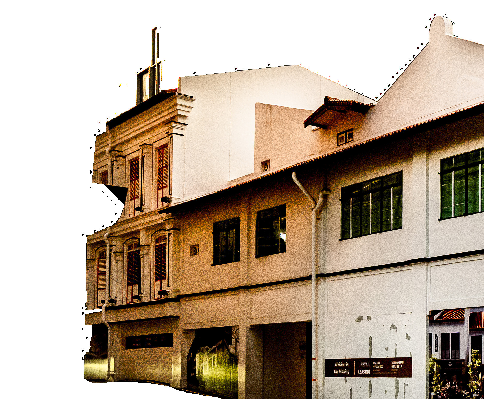

Singapore’s skyline shimmers with glass and steel. But between the towers stand quiet survivors: buildings that hold the city’s memory in their masonry, their timber joists, their narrow five-foot ways. Most people walk past without a second thought. For an engineer, they demand a very different kind of thinking.
Bringing these properties back to life requires creativity, care and respect. It is preservation and progress at once: modern systems carefully woven into century-old frameworks without erasing their stories.

Singapore’s approach to building conservation is grounded in legislation. The Preservation of Monuments Act, enacted in December 1970, established the legal framework to protect buildings and sites of national significance, leading to the formation of the Preservation of Monuments Board. This early legislation ensured that landmarks of historical, architectural and cultural importance could be formally gazetted and safeguarded.
The broader urban conservation regime emerged in 1989, when the Urban Redevelopment Authority formalised its conservation programme and introduced statutory planning controls for entire precincts. Historic areas such as Chinatown and Little India were among the first to be gazetted, marking Singapore’s shift toward area-based conservation.